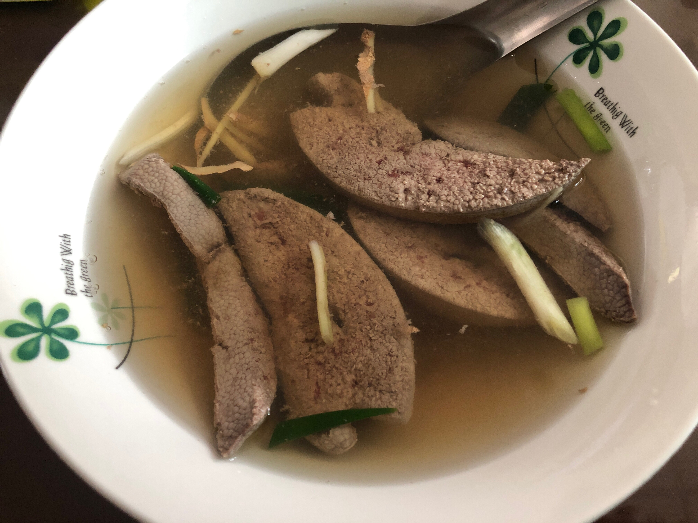

1.陽春麵
陽春麵，又稱光麵或清湯麵、白湯麵和上海麵，是指一種幾乎不加上任何配菜的湯麵或乾麵，常見於台灣與江蘇、上海。便宜簡便是受歡迎的主因，煮法沒有規限，細如龍鬚麵或者粗如寬麵均可使用，通常僅以豬油、醬油調味。
2.肉燥飯

肉臊飯（臺灣話：bah-sò-pn̄g，又寫作肉燥飯），在台灣北部又稱為滷肉飯 （臺灣話：ló͘-bah-pn̄g，又寫作魯肉飯），是臺灣流行的一道豬肉丁（或絞肉）飯菜餚。近年臺灣官方將肉臊飯英譯，改為台語「滷肉飯」發音的直譯（如日本壽司、韓國泡菜英譯，以當地語言直譯，突顯專有特色）。若作成素食，則稱為素滷飯。
3.花枝羹
花枝羹（亦名為花枝焿或生炒花枝）是普及於台灣市集販售的海鮮食品，大眾化小吃，台北士林夜市尤為著名。
花枝或魷魚為主，常見的有花枝切塊，加勾芡形成稠湯，再加醃筍塊或筍絲、香菇絲、木耳、蝦米、豆芽、蛋花，加沙茶、九層塔、烏醋、醬油、芥末，即可。
4.炒麵
炒麵，是指將麵條快炒出來的麵類料理，口味以醬油為主，主要分為上海炒麵、廣東炒麵和日式炒麵。
5.米苔目
米苔目，客家傳統米製麵條，一般認為起源於廣東梅州，常見於福建、香港、馬來西亞、台灣等地區。
6.豬腳麵線
豬腳麵線是台灣常見的一道菜餚，由滷豬腳加上麵線組成，因為細長的麵條代表長壽，常用於祝賀祝壽，尤其是在閏月時給長輩祝福，生日時祝壽，還有災難過後，如出獄、出院等，一定要服用，有消災解厄的意味。
台灣人則是以豬腳搭配，在喜慶或尋求改運時食用，稱為豬腳麵線。吃「豬腳麵線」在台灣傳統文化裡面，代表去霉運、添福壽之意，因為古早人形容倒楣的事為「衰佮踏著豬屎」，為了將霉運踢開，豬腳向來有「勇健」與「富足」的形象，麵線因為細細長長，被賦予長壽吉祥的象徵，兩者合在一起，自然可以否極泰來，添福添壽。
7.蔥抓餅

蔥抓餅，抓餅（又變化出手抓餅），是一種現時流行於台灣和山東的傳統小吃。因製作過程會用手將餅皮抓起，使餅皮看似鬆散，在台灣則是稱作「蔥抓餅」。蔥抓餅與蔥油餅的製作材料和做法相似，但其差異在於抓餅的餅皮有被手或工具抓出膨鬆的口感，並且可加蛋或芝士做為內餡與佐料食用。由於抓餅的做法簡單，材料準備容易，是一項快速可食用的熱食，因此會有家庭買餅皮回家製作食用，在夜市、超級市場皆有販賣蔥抓餅。
8.潤餅
潤餅，又稱薄餅卷、嫩餅菜，是春捲的一種，用春捲皮鋪上一層糖粉和花生粉後加上各式各樣菜和肉捲好後無須油炸直接食用。
9.豬肝湯
豬肝湯，是用豬肝製作的一道家常菜。豬肝中鐵質豐富，是補血食品中最常用的食物，食用豬肝可調節和改善貧血病人造血系統的生理功能。
10.米糕
筒仔米糕（臺灣話：tâng-á-bí-ko）是一樣常見於糯米類小吃，與油飯、米糕類似，但卻是在瓷瓶、竹筒或鐵罐中炊煮而成，口味濃郁。
有些店家會再淋上肉燥和加上肉鬆、香菜、蘿蔔乾。